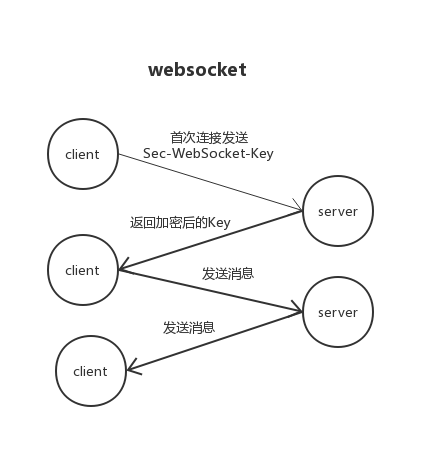

老雷socket编程之websocket实现
我们主要实现私聊和群聊两个功能,要在web端实现想微信QQ那样的即时通讯的功能，我们需要了解一下websocket。
websocket是一种可以双向通讯的长连接协议，http是获取完数据就关闭，websocket则可以一直连接，就像铺了一条管道一样，水可以一直流着。
一、websocket前端
var ws = new WebSocket("ws://127.0.0.1.com:8282");
ws.onopen=function(){
var msg = JSON.stringify({
type: "login",
content: "login"
});
ws.send(msg);
}
ws.onmessage = function (e){
console.log(e);
//服务器发送的内容
var res = JSON.parse(e.data);
switch(res.type){
case "login":
break;
case "pm":
break;
case "groupPm":
break;
}
}
ws.onerror=function (e){
console.log(e);
}
ws.onclose=function (e){
console.log(e);
}
二、服务端

客户端发送http请求，带上Sec-WebSocket-Key，
服务端握手 加密key,发送给客户端。
双方能进行交流。
发送接收消息需要进行打包encode 解包decode。
<?php
class SocketService
{
public $host="tcp://0.0.0.0:8000";
private $address;
private $port;
private $_sockets;
public $clients;
public $maxid=1000;
public function __construct($address = '', $port='')
{
if(!empty($address)){
$this->address = $address;
}
if(!empty($port)) {
$this->port = $port;
}
}
public function onConnect($client_id){
echo "Client client_id:{$client_id} \n";
}
public function onMessage($client_id,$msg){
//发给所有的
foreach($this->clients as $kk=>$cc){
if($kk>0){
$this->send($cc, $msg);
}
}
}
public function onClose($client_id){
echo "$client_id close \n";
}
public function service(){
//获取tcp协议号码。
$tcp = getprotobyname("tcp");
$sock = stream_socket_server($this->host, $errno, $errstr);;
if(!$sock)
{
throw new Exception("failed to create socket: ".socket_strerror($sock)."\n");
}
stream_set_blocking($sock,0);
$this->_sockets = $sock;
echo "listen on $this->address $this->host ... \n";
}
public function run(){
$this->service();
$this->clients[] = $this->_sockets;
while (true){
$changes = $this->clients;
//$write = NULL;
//$except = NULL;
stream_select($changes, $write, $except, NULL);
foreach ($changes as $key => $_sock){
if($this->_sockets == $_sock){ //判断是不是新接入的socket
if(($newClient = stream_socket_accept($_sock)) === false){
unset($this->clients[$key]);
continue;
}
$line = trim(stream_socket_recvfrom($newClient, 1024));
//握手
$this->handshaking($newClient, $line);
$this->maxid++;
$this->clients[$this->maxid] = $newClient;
$this->onConnect($this->maxid);
} else {
$res=@stream_socket_recvfrom($_sock, 2048);
//客户端主动关闭
if(strlen($res) < 9) {
stream_socket_shutdown($this->clients[$key],STREAM_SHUT_RDWR);
unset($this->clients[$key]);
$this->onClose($key);
}else{
//解密
$msg = $this->decode($res);
$this->onMessage($key,$msg);
}
}
}
}
}
/**
* 握手处理
* @param $newClient socket
* @return int 接收到的信息
*/
public function handshaking($newClient, $line){
$headers = array();
$lines = preg_split("/\r\n/", $line);
foreach($lines as $line)
{
$line = chop($line);
if(preg_match('/\A(\S+): (.*)\z/', $line, $matches))
{
$headers[$matches[1]] = $matches[2];
}
}
$secKey = $headers['Sec-WebSocket-Key'];
$secAccept = base64_encode(pack('H*', sha1($secKey . '258EAFA5-E914-47DA-95CA-C5AB0DC85B11')));
$upgrade = "HTTP/1.1 101 Web Socket Protocol Handshake\r\n" .
"Upgrade: websocket\r\n" .
"Connection: Upgrade\r\n" .
"WebSocket-Origin: $this->address\r\n" .
"WebSocket-Location: ws://$this->address:$this->port/websocket/websocket\r\n".
"Sec-WebSocket-Accept:$secAccept\r\n\r\n";
return stream_socket_sendto($newClient, $upgrade);
}
/**
* 发送数据
* @param $newClinet 新接入的socket
* @param $msg 要发送的数据
* @return int|string
*/
public function send($newClinet, $msg){
$msg = $this->encode($msg);
stream_socket_sendto($newClinet, $msg);
}
/**
* 解析接收数据
* @param $buffer
* @return null|string
*/
public function decode($buffer){
$len = $masks = $data = $decoded = null;
$len = ord($buffer[1]) & 127;
if ($len === 126) {
$masks = substr($buffer, 4, 4);
$data = substr($buffer, 8);
} else if ($len === 127) {
$masks = substr($buffer, 10, 4);
$data = substr($buffer, 14);
} else {
$masks = substr($buffer, 2, 4);
$data = substr($buffer, 6);
}
for ($index = 0; $index < strlen($data); $index++) {
$decoded .= $data[$index] ^ $masks[$index % 4];
}
return $decoded;
}
/**
*打包消息
**/
public function encode($buffer) {
$first_byte="\x81";
$len=strlen($buffer);
if ($len <= 125) {
$encode_buffer = $first_byte . chr($len) . $buffer;
} else {
if ($len <= 65535) {
$encode_buffer = $first_byte . chr(126) . pack("n", $len) . $buffer;
} else {
$encode_buffer = $first_byte . chr(127) . pack("xxxxN", $len) . $buffer;
}
}
return $encode_buffer;
}
/**
* 关闭socket
*/
public function close(){
return socket_close($this->_sockets);
}
}
$sock = new SocketService('127.0.0.1','9000');
$sock->run();
三、常见应用
1.聊天室、群聊 实现类似QQ群的web版本
2.im私聊、客服 实现类似qq聊天，和即时客服交流
3.消息推送 建立即时的web消息推送
课后练习
实现聊天室 跟 个人聊天
前端格式
var msg = JSON.stringify({
type: "login",
content: "login"
});
var msg = JSON.stringify({
type: "group",
content: "login",
gid:123
});
var msg = JSON.stringify({
type: "pm",
content: "login",
uid:123
});